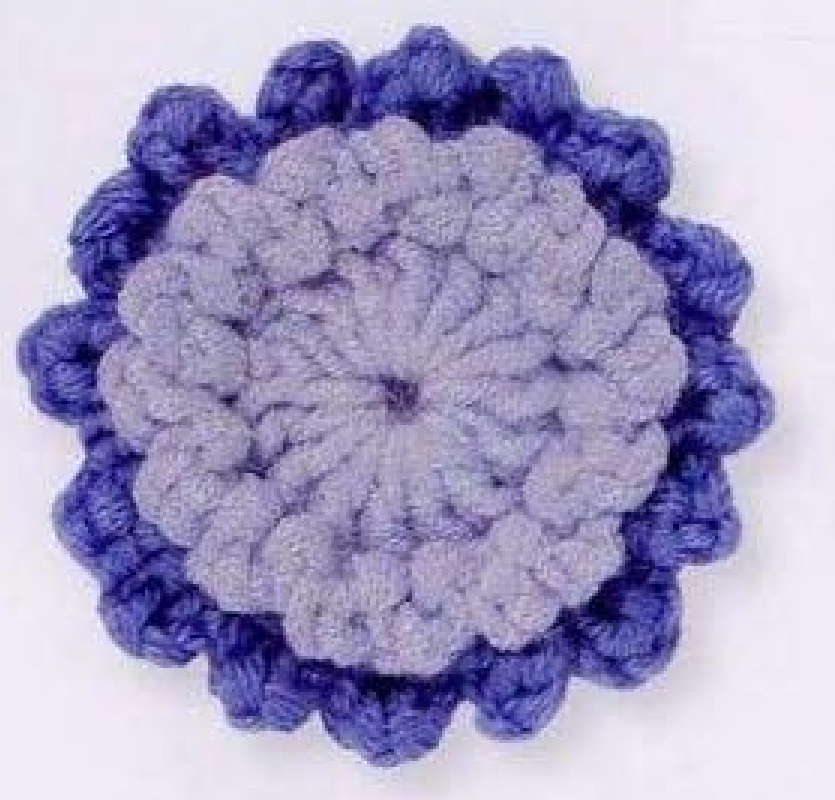
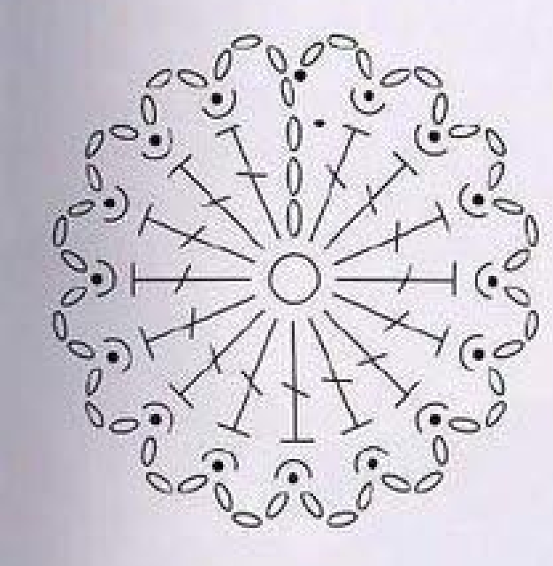
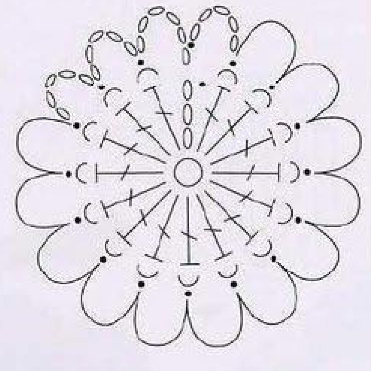
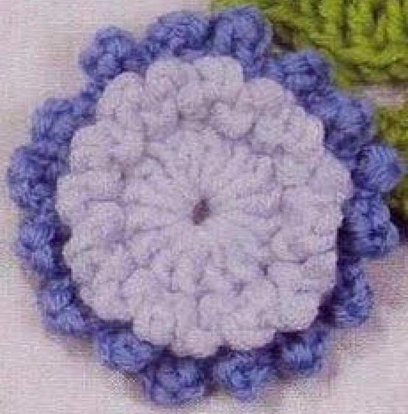

Crochet Scabious uses two blue shades and two chain-loop layers to make a small rounded flower. A pale-blue center supports short loops on its front strands, while longer deep-blue loops are worked behind that layer using the remaining back strands. This guide follows pattern 55 in Lesley Stanfield’s 100 Flowers to Knit & Crochet, preserving the sixteen-position structure in US crochet terms.

Key Takeaways
- Use DK wool in pale blue A and deep blue B.
- The first round has sixteen counted positions: a three-chain rise and fifteen US doubles.
- The pale-blue loop round uses front strands of the first-round doubles.
- The deep-blue petals use back strands of those same first-round doubles, behind the pale-blue loops.
- Opening chain groups are one chain longer than subsequent repeated loop groups.
- Finish both loop rounds invisibly without adding a sewn center or extra edging.
CROCHET SCABIOUS FLOWER PATTERN
Project: One round wool flower with a pale-blue center and deep-blue outer chain-loop petals. This entry appears in the source’s intermediate designs. The original three rounds are translated into US terms; hook, gauge, yarn quantity, and dimensions are not specified.
| Skill level | Intermediate designs in the source. Practical guidance: identify individual stitch strands and keep a later round behind an existing loop layer. |
|---|---|
| Base size | One flower with 16 counted center positions and two loop layers. Measurements are not specified. |
| Yarn | DK wool in pale blue A and deep blue B. |
| Quantity, hook, gauge | Not specified. Choose a hook suited to your wool and assess the center and chain loops. |
| Notions | Scissors and a blunt needle for invisible finishing and securing ends. Optional markers help identify the first-round start. |
| US abbreviations | ch = chain; dc = double crochet; sl st = slip stitch; RS = right side. UK tr = US dc. Front and back strands refer to the two strands of each round-1 stitch top. |
| Center foundation | With A, make an adjustable slip ring. |
| Round 1, RS | Ch 3, work 15 dc in the ring, pull the end to close the ring, and sl st in the top chain of the starting ch 3. 16 counted positions. |
| Round 2 | Ch 4; [sl st in the front strand of the next dc, ch 3] 15 times. Sl st in the first chain of the opening ch 4. Fasten off invisibly. |
| Round 3, petals, RS | Work behind round 2 and into round 1. Join B in the top chain of the round-1 starting ch 3. Ch 6; working in the back strand of each round-1 dc, [sl st in the next dc, ch 5] 15 times. Sl st in the first chain of the opening ch 6. Fasten off invisibly. |
| Finishing | Secure the ends on the back and arrange the pale front loops and deep-blue rear loops. The entry has no separate stem, leaf, stuffed center, or additional sewing instruction. |
Understand the Front and Rear Loop Layers
The center is a round of US double crochets worked into an adjustable ring. Its starting three-chain rise counts with the fifteen actual doubles to give sixteen positions around the flower. Two later rounds return to that same first-round foundation, using different parts of the stitch tops to separate the pale center texture from the deep outer petals.
Round 2 uses the front strand of each actual double and makes short pale-blue loops. Round 3 is worked behind those loops, into the back strand of the first-round doubles. This means the petal round does not attach to the newest pale chain loops. The two layers share a foundation while retaining their own visible edges.
The finished photograph shows a pale round center with textured loops and a deep-blue scalloped border. No green stem is part of this pattern entry. A green leaf appears nearby in the directory arrangement, but that belongs to Fern Leaf, a separate numbered design. Keep the Scabious recipe distinct from adjacent motifs on a shared source page.
Materials and a First-Round Sample
Prepare pale blue DK wool as A and deep blue DK wool as B. The contrast between these two shades helps reveal the layers, but the construction still depends on stitch placement rather than color alone. Choose comparable yarn thickness for the two shades so the deep chain loops do not overwhelm the pale center.
No hook size, quantity, numerical gauge, or finished diameter is specified in the entry. Select a hook suited to your wool and inspect the first round before proceeding. You need visible stitch tops so the front and back strands can be used separately. An extremely tight round makes that later placement difficult even when its stitch count is correct.
Keep a blunt needle nearby for tidying the loop-round joins and ring end. Optional markers can identify the top of the original three-chain rise, which is used for the first join and the deep-blue yarn attachment. Marking that location helps prevent accidentally starting the rear layer on the wrong chain loop.
US Double Crochet and the Two Top Strands
The book’s UK treble crochet becomes US double crochet here. Yarn over once, insert into the indicated base, draw up a loop, draw through two loops, then draw through two loops again. Each double is a complete individual stitch. The center is not made from clusters or unfinished stitches closed together.
Each double has a top that resembles a small V. Viewed with the right side facing in the intended working orientation, the front strand is the nearer part of that V and the back strand is the farther part. Round 2 uses one strand and leaves the other available for round 3. Do not catch both strands when making the pale-loop anchors.
Before beginning the loop layer, examine a few stitch tops slowly. A slip stitch can hide the strand it uses after it is tightened. Identifying the two strands before drawing through makes it easier to keep the untouched back strand accessible for the deep-blue round. The original chart helps distinguish these anchoring routes.
Placement checkpoint: Both loop rounds attach to round 1. Round 2 uses front strands; round 3 uses back strands behind the pale loops.
Step 1: Make the Adjustable Pale-Blue Center
With A, make an adjustable slip ring. With the right side facing, chain three and work fifteen US doubles into the ring. Count the actual doubles separately from the rise. There should be fifteen completed doubles, and the starting rise supplies the sixteenth counted position for the round.
Pull the yarn end to close the center ring, then slip stitch into the top chain of the starting three-chain rise. This join closes at the height of the doubles. Do not join to the bottom of the rise or to the first actual double simply because it is easier to see.
The closed ring should support a compact circular foundation, with accessible stitch tops around it. Secure the ring end later through established stitches on the back rather than cutting it flush immediately. You will work two different loop layers around this same foundation, so check the count and join while the structure remains visible.

Step 2: Begin the Pale Front-Strand Loops
Chain four to begin round 2. This opening group is deliberately one chain longer than the later three-chain groups. It is not an instruction to make every pale loop with four chains. The source closes the round into the first chain of this opening group after the repeated anchors are complete.
Slip stitch into the front strand of the next first-round double, then chain three. Repeat that bracketed slip-stitch-and-three-chain group fifteen times in total, advancing to the next actual double each time. Keep the hook beneath only the intended front strand so the back strand remains free.
As you move around the circle, allow the chain sections to sit on the front of the center. Do not work the slip stitch into the chain just made or repeatedly anchor to the same double. The fifteen repeats correspond to the fifteen actual doubles following the counted starting rise of round 1.
Step 3: Close and Finish the Pale Loop Round
After the fifteenth repeated three-chain group, slip stitch into the first chain of the opening four-chain group. The source names that first chain specifically. Joining to the fourth chain instead would leave a different opening shape and height at the round transition.
Fasten off invisibly. Tidy the connection with a needle so it follows the surrounding stitch line without pulling the loop closed. Secure the end on the back through existing stitches. Avoid dragging a long finishing strand across the pale center where it would cover the radial stitches.
Check that the pale loop layer is continuous around the first-round foundation. There are sixteen loop sections when the opening section is counted with the fifteen repeated sections. If the edge has an unexplained long gap, inspect whether one actual double was skipped or whether the closing slip stitch used the wrong opening chain.
Pale-loop checkpoint: Ch 4 opens the round; fifteen ch-3 groups follow. The closing join goes into the first chain of the opening ch 4.
Step 4: Find the Rear Attachment for Deep Blue
With the right side facing, work behind round 2 and locate the top chain of the first-round starting three-chain rise. Join deep blue B at that original location. Do not attach B to the newly finished pale-loop join simply because it is the most recent stitch.
Move the pale loops gently out of the way as needed to see the original double-crochet tops. Their untouched back strands form the path for the petal round. Keep the pale layer in front of your new work rather than pulling it through the deep loops or flattening both layers together.
Take a moment to identify the next first-round double and its back strand before beginning the opening chain. This simple placement check prevents the most common construction change: treating round 3 as an ordinary edging on round 2 instead of a separate rear layer on round 1.

Step 5: Work the Longer Deep-Blue Petal Loops
Chain six. Then, working in the back strand of each first-round double, slip stitch in the next double and chain five. Repeat the bracketed anchor-and-five-chain group fifteen times in total. Each repeat advances one original double, while the pale front-strand loops remain in front.
The deep-blue chain sections are longer than the pale sections and therefore extend beyond them in the finished flower. They are chain-loop petals, rather than solid fans of tall stitches. The source does not ask for doubles worked back into these chains or for an extra round that fills the loops.
Keep the chain tension reasonably consistent from one petal to the next. A tight five-chain loop can look shorter than its neighbors even when its count is correct. Count five chains before anchoring at the following double, and keep the anchor in that double’s back strand rather than in an adjacent pale chain gap.
Two Layers, One Sixteen-Position Foundation
The pale loops and deep-blue petals use opposite strands of the same center round. This shared base gives the flower its layered appearance without a separately sewn pale disc. Keep the rear anchors in the original back strands so the outer edge can emerge behind the center.
Step 6: Close the Petal Round Invisibly
After the fifteenth repeated five-chain group, slip stitch into the first chain of the opening six-chain group. Fasten off invisibly. As with round 2, the opening group is one chain longer than the repeats and the join uses its first chain, rather than the last chain at the top of the group.
Arrange the deep loops around the pale center and inspect the final transition. The deep border should continue around the flower without an added straight tail crossing the front. Use the needle to secure the end on the back, keeping the yarn within established stitches rather than threading across an open petal loop.
Count the sixteen loop sections including the opening section. If the last loop is unusually large or the join looks crowded, review the first-chain closing location and the fifteen anchor repeats. Do not add a seventeenth petal to conceal a misplaced closing join or tighten one neighboring loop to disguise it.
Finish and Compare Both Sides
The source gives no separate making-up paragraph for Scabious. After the invisible finishes, secure remaining ends and arrange the two layers gently. Keep the pale front loops visible and let the longer deep loops form the outside silhouette. There is no instruction to sew another disc over the center or stuff it into a dome.
Inspect the back to see whether the deep anchors stayed on the original back strands. Inspect the front to check that the pale loops were not caught into the rear round. A trapped pale loop may hide under a deep petal and make the front texture look interrupted even though all chain counts are correct.
Follow the wool-care guidance for any optional shaping. The entry does not specify pressing, a blocking diameter, or a temperature for this flower. Start with gentle arrangement rather than flattening the wool so firmly that the loop texture disappears. Secure all ends before attaching the motif to another item.

Troubleshoot Counts, Strands, and Color Boundaries
A back strand is difficult to find
Check whether the pale slip stitch caught both strands of the double. If it did, correct that front-loop anchor before continuing the rear layer. Pulling a deep anchor through the pale chain instead uses a different base. A slightly looser working tension can also make the original stitch tops easier to identify.
The two loop layers blend together
Review whether round 3 was worked behind round 2. The deep anchors belong to the original doubles, and the pale loops should remain on the front. Also compare the five-chain deep repeats with the three-chain pale repeats. Using one repeated chain length for both layers reduces their intended difference.
The opening loop looks different
The printed starts are four chains for round 2 and six for round 3. Each closes into its first chain. Keep those start and join instructions together rather than changing the start to match the repeats by habit. The opening section counts with fifteen repeats to complete the sixteen-position route.
Optional Color Choices, Sizing, and Uses
You can explore a different pair of related shades as an optional color variation while retaining the loop counts and front/back placements. A lighter center and deeper outside shade make the construction easy to see. A different yarn weight or hook can change the diameter, but the source supplies no graded sizes or gauge calculation.
Suggested uses include a floral applique on a bag, a textile panel, or a handmade accessory. These are application ideas rather than separate projects in the Scabious entry. Position the finished motif before sewing and attach through stable center or back stitches, allowing the longer deep loops to remain free around the edge.
Variation guidance: A stem, leaf, solid petal edging, extra loop layer, or altered repeat count is a personal adaptation. Keep the original three-round flower recipe clear.
Scabious at a Glance
- Pale blue A and deep blue B in DK wool.
- Sixteen counted positions in the center round.
- Pale front-strand loops: ch 4 start and fifteen ch-3 repeats.
- Deep back-strand loops: ch 6 start and fifteen ch-5 repeats.
- Close each loop round into the first opening chain and finish invisibly.
Conclusion
Scabious gets its layered appearance from precise strand placement and two different loop lengths. Check the sixteen-position center, reserve the back strands while making the pale layer, and return behind that layer for the deep-blue petals. The compact card preserves the complete source recipe in US terms, while the charts show the two routes. Click the Pin to return to the pattern when you are ready to make the flower.
Source and Tags
Source: Lesley Stanfield, 100 Flowers to Knit & Crochet, pattern 55 Scabious. Instructions and charts are on printed page 75, PDF page 69; the directory example is on printed page 33, PDF page 28. Source photographs show finished flowers, rather than progress images. Adjacent green directory work belongs to a separate Fern Leaf pattern. This guide translates the recipe into US terminology and labels additional practical advice separately.
Crochet ScabiousBlue Crochet FlowerChain-Loop PetalsDK WoolLayered FlowerUS Crochet Terms